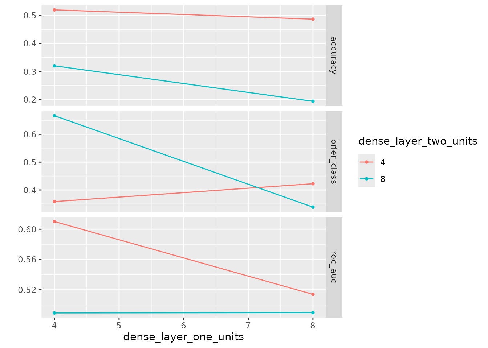

Tuning Multiple Similar Parameters: Ensuring `autoplot` Uniqueness
Source:vignettes/autoplot_uniqueness.Rmd
autoplot_uniqueness.RmdIntroduction
When using kerasnip to define and tune Keras models
within the tidymodels framework, you might encounter
situations where you want to tune multiple parameters that, by default,
map to the same underlying dials parameter type. A common
example is tuning the number of units in multiple
layer_dense blocks within the same model.
While kerasnip intelligently maps these parameters
(e.g., dense1_units and dense2_units both map
to dials::hidden_units()), this can lead to ambiguity when
visualizing tuning results with ggplot2::autoplot().
Without a way to distinguish between these otherwise identical parameter
types, autoplot() may produce errors or misleading
plots.
This vignette demonstrates how to explicitly provide unique
identifiers to your tuned parameters, ensuring autoplot()
can correctly visualize the results for each distinct parameter.
The Problem (Implicit)
Consider a model with two dense layers, each with a
units parameter. If you were to define them for tuning
without unique ids, autoplot() would encounter
an issue because it cannot distinguish between the two parameters.
For example, if you were to run
ggplot2::autoplot(tune_res) without unique
ids, you might encounter an error similar to this:
#> Error in `dplyr::rename()`:
#> ! Names must be unique.
#> ✖ These names are duplicated:
#> * "# Hidden Units" at locations 1 and 2.This error clearly indicates that autoplot() is trying
to rename columns for plotting, but it finds duplicate names like “#
Hidden Units” because both dense1_units and
dense2_units are generically identified as
hidden_units by dials without further
distinction. This makes it impossible for autoplot() to
differentiate their tuning results.
The Solution: Using Unique ids with
tune()
The solution is to provide a unique id argument to the
tune() function for each parameter you wish to
distinguish.
Let’s define a simple sequential Keras model with two dense layers:
library(kerasnip)
library(keras3)
library(parsnip)
#>
#> Attaching package: 'parsnip'
#> The following object is masked from 'package:kerasnip':
#>
#> get_model_env
library(dials)
#> Loading required package: scales
library(workflows)
library(recipes)
#> Loading required package: dplyr
#>
#> Attaching package: 'dplyr'
#> The following objects are masked from 'package:stats':
#>
#> filter, lag
#> The following objects are masked from 'package:base':
#>
#> intersect, setdiff, setequal, union
#>
#> Attaching package: 'recipes'
#> The following object is masked from 'package:stats':
#>
#> step
library(rsample)
library(tune)
library(ggplot2)
# Define a spec with multiple hidden unit parameters
model_name <- "autoplot_unique_spec"
# Clean up the spec if it already exists from a previous run
if (exists(model_name, mode = "function")) {
suppressMessages(remove_keras_spec(model_name))
}
input_block <- function(model, input_shape) {
keras3::keras_model_sequential(input_shape = input_shape)
}
dense_block <- function(model, units = 10) {
model |> keras3::layer_dense(units = units)
}
output_block <- function(model, num_classes) {
model |>
keras3::layer_dense(units = num_classes, activation = "softmax")
}
create_keras_sequential_spec(
model_name = model_name,
layer_blocks = list(
input = input_block,
dense1 = dense_block,
dense2 = dense_block,
output = output_block
),
mode = "classification"
)
# Now, create the model specification and assign unique IDs for tuning
tune_spec <- autoplot_unique_spec(
dense1_units = tune(id = "dense_layer_one_units"),
dense2_units = tune(id = "dense_layer_two_units")
) |>
set_engine("keras")
print(tune_spec)
#> autoplot unique spec Model Specification (classification)
#>
#> Main Arguments:
#> num_input = structure(list(), class = "rlang_zap")
#> num_dense1 = structure(list(), class = "rlang_zap")
#> num_dense2 = structure(list(), class = "rlang_zap")
#> num_output = structure(list(), class = "rlang_zap")
#> dense1_units = tune(id = "dense_layer_one_units")
#> dense2_units = tune(id = "dense_layer_two_units")
#> learn_rate = structure(list(), class = "rlang_zap")
#> fit_batch_size = structure(list(), class = "rlang_zap")
#> fit_epochs = structure(list(), class = "rlang_zap")
#> fit_callbacks = structure(list(), class = "rlang_zap")
#> fit_validation_split = structure(list(), class = "rlang_zap")
#> fit_validation_data = structure(list(), class = "rlang_zap")
#> fit_shuffle = structure(list(), class = "rlang_zap")
#> fit_class_weight = structure(list(), class = "rlang_zap")
#> fit_sample_weight = structure(list(), class = "rlang_zap")
#> fit_initial_epoch = structure(list(), class = "rlang_zap")
#> fit_steps_per_epoch = structure(list(), class = "rlang_zap")
#> fit_validation_steps = structure(list(), class = "rlang_zap")
#> fit_validation_batch_size = structure(list(), class = "rlang_zap")
#> fit_validation_freq = structure(list(), class = "rlang_zap")
#> fit_verbose = structure(list(), class = "rlang_zap")
#> fit_view_metrics = structure(list(), class = "rlang_zap")
#> compile_optimizer = structure(list(), class = "rlang_zap")
#> compile_loss = structure(list(), class = "rlang_zap")
#> compile_metrics = structure(list(), class = "rlang_zap")
#> compile_loss_weights = structure(list(), class = "rlang_zap")
#> compile_weighted_metrics = structure(list(), class = "rlang_zap")
#> compile_run_eagerly = structure(list(), class = "rlang_zap")
#> compile_steps_per_execution = structure(list(), class = "rlang_zap")
#> compile_jit_compile = structure(list(), class = "rlang_zap")
#> compile_auto_scale_loss = structure(list(), class = "rlang_zap")
#>
#> Computational engine: kerasNotice how dense1_units and dense2_units
are both passed to tune(), but each is given a distinct
id. This id acts as a label that
autoplot() can use to differentiate the parameters.
Setting up the Tuning Workflow
Next, we’ll set up a tidymodels workflow, define the
parameter ranges, and create a tuning grid.
# Set up workflow and tuning grid
rec <- recipes::recipe(Species ~ ., data = iris)
tune_wf <- workflows::workflow(rec, tune_spec)
params <- tune::extract_parameter_set_dials(tune_wf)
# Update the parameter ranges using kerasnip::hidden_units
# The `id`s provided in tune() are automatically detected and used here.
params <- params |>
update(
dense_layer_one_units = hidden_units(range = c(4L, 8L)),
dense_layer_two_units = hidden_units(range = c(4L, 8L))
)
grid <- dials::grid_regular(params, levels = 2)
control <- tune::control_grid(save_pred = FALSE, verbose = FALSE)
print(grid)
#> # A tibble: 4 × 2
#> dense_layer_one_units dense_layer_two_units
#> <int> <int>
#> 1 4 4
#> 2 8 4
#> 3 4 8
#> 4 8 8Running the Tuning Process
Now, we run tune::tune_grid to perform the actual
tuning. For demonstration purposes, we’ll use a small number of
resamples and a simple dataset.
# Run tuning
tune_res <- tune::tune_grid(
tune_wf,
resamples = rsample::vfold_cv(iris, v = 2),
grid = grid,
control = control
)
#> 3/3 - 0s - 18ms/step
#> 3/3 - 0s - 7ms/step
#> 3/3 - 0s - 18ms/step
#> 3/3 - 0s - 7ms/step
#> 3/3 - 0s - 18ms/step
#> 3/3 - 0s - 7ms/step
#> 3/3 - 0s - 19ms/step
#> 3/3 - 0s - 7ms/step
#> 3/3 - 0s - 17ms/step
#> 3/3 - 0s - 7ms/step
#> 3/3 - 0s - 17ms/step
#> 3/3 - 0s - 7ms/step
#> 3/3 - 0s - 17ms/step
#> 3/3 - 0s - 7ms/step
#> 3/3 - 0s - 18ms/step
#> 3/3 - 0s - 7ms/step
print(tune_res)
#> # Tuning results
#> # 2-fold cross-validation
#> # A tibble: 2 × 4
#> splits id .metrics .notes
#> <list> <chr> <list> <list>
#> 1 <split [75/75]> Fold1 <tibble [12 × 6]> <tibble [0 × 4]>
#> 2 <split [75/75]> Fold2 <tibble [12 × 6]> <tibble [0 × 4]>Visualizing Results with autoplot()
With the tuning complete, we can now use
ggplot2::autoplot() to visualize the results. Because we
provided unique ids, autoplot() can correctly
generate separate plots for each tuned parameter.
# Assert that autoplot works without error
ggplot2::autoplot(tune_res)
As you can see, autoplot() successfully generates a plot
showing the performance across the different values for
dense_layer_one_units and
dense_layer_two_units independently.
Why Unique ids are Necessary
Internally, kerasnip maps arguments like
units from your layer_blocks functions to
appropriate dials parameter objects (e.g.,
dials::hidden_units()). When multiple such arguments exist,
they all point to the same type of dials
parameter.
The id argument in tune() serves as a
unique identifier that tune and
ggplot2::autoplot() use to distinguish between different
instances of these parameter types. Without it, autoplot()
would see multiple parameters of type hidden_units and
wouldn’t know how to plot them separately, leading to errors or
combining them incorrectly.
Best Practices
-
Always use unique
ids: When tuning multiple parameters that are conceptually similar (e.g.,unitsin different layers,ratein different dropout layers), always provide a descriptive and uniqueidto thetune()function. -
Descriptive
ids: Chooseids that clearly indicate which part of the model the parameter belongs to (e.g.,dense_layer_one_units,conv_filter_size). This improves readability and understanding of your tuning results.
By following this practice, you ensure that your
kerasnip models are robustly tunable and that their results
can be clearly visualized using the tidymodels
ecosystem.